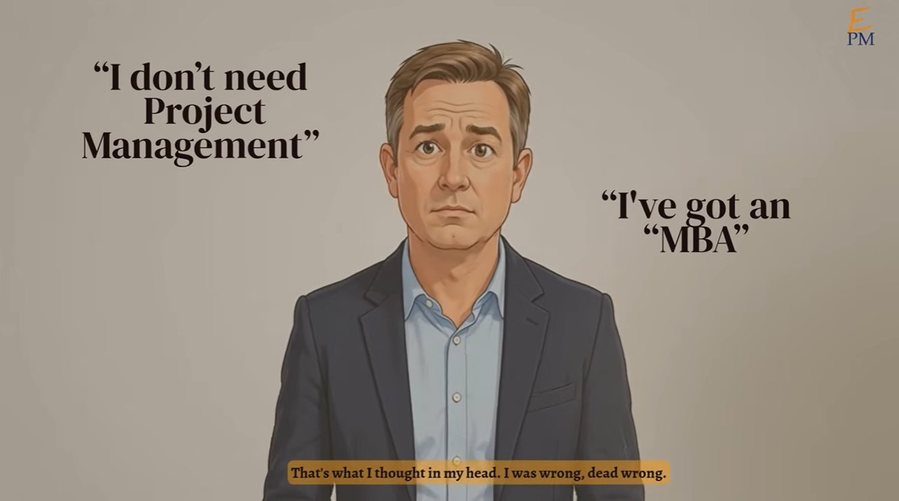

Project Management Professional
Project Management Institute (PMI)The global standard for leading a project end to end: chartering, scheduling, cost, risk, stakeholders and delivery.
Service 05 — Deliver it
Good ideas rarely fail. Unmanaged projects do.
Now that it’s funded, who keeps the work, the vendors and the stakeholders moving in the same direction?
An integrated plan, a steady reporting cadence, active risk and issue management, and stage-gate reviews through to launch.

Video · “I've got an MBA”Watch on YouTube ↗
From entrepreneur to project management advocate
That was Kenny's view as a young entrepreneur with a strategy degree. Project management looked like corporate overhead — Gantt charts and status meetings for people who couldn't move fast. Entrepreneurs, he figured, just figure it out.
Then he spent years commercializing new technologies alongside universities, grower organizations and industry partners, and watched promising work stall in the gap between the lab and the market. The cause was rarely the science. It was skipped steps, untested assumptions, unclear decision rights and sponsors who were never truly aligned.
So he went and earned the discipline — PMP for projects, MSP for programs — and now runs his own companies on it. Today he teaches it as Entrepreneurial Project Management: the structure entrepreneurs resist, sized so it speeds them up instead of slowing them down.
Process slows entrepreneurs down.
The plan is in my head.
Talking about risk is pessimism.
Smart people will sort it out.
Credentials
Most project managers hold one framework. Kenny holds both sides: the PMP for delivering a single project to scope, time and budget, and MSP for steering a portfolio of related projects toward a strategic benefit — backed by the business judgment of an MBA.
The global standard for leading a project end to end: chartering, scheduling, cost, risk, stakeholders and delivery.
The framework for running several related projects as one program — governance, benefits realization and organizational change.
The business lens that keeps every plan tied to strategy, cash and the decision the sponsor actually has to make.
Track record
The hardest projects aren't technically complex — they're organizationally complex. Universities, grower boards, state agencies, manufacturers and investors, each with their own priorities, moving one innovation toward market.
Helped run a stage-gate program for a state soybean board, working alongside evaluators from a research institute, an industry association, a university business school and outside consultants. Custom scoring at each gate narrowed 84 submitted bio-based technologies to four candidates for accelerated commercialization.
Part of the core team on a cross-organization study funded by a national grower association and a state development program to test whether converting ethanol to a bio-based solvent could pay off — with a standing call cadence, surveys of distributors, users and producers, and a final recommendation report.
Designed the operating guide for a soybean council’s innovation program: five stages from imagining to growth, go / kill / more-information gates, a RACI for every activity, a sponsor’s council for value-chain partners, KPI templates for board reporting and a project-closing checklist.
Kenny runs his own companies on the same discipline: a seasonal tree-injection business across several Midwest markets, and a Caribbean water taxi serving St. Thomas, St. John and the BVI — each with live dashboards, defined handoffs and a weekly operating rhythm.
Hands-on management for a single critical project, or the governance that ties several together. Either way, you get the documents, the cadence and the decisions — not a binder nobody reads.
Purpose, goals, scope boundaries, constraints, budget, roles and decision rights — built with your sponsor so everyone signs the same page.
An activity register, dependencies and a Gantt view that answers the sponsor’s first question: when will this be done?
A living risk register with owners and mitigations, plus a stakeholder map that turns potential blockers into allies early.
Clear criteria for advance, kill or get-more-information decisions, so money stops flowing to projects that can’t win.
Several related projects — partners, vendors, workstreams — coordinated toward one strategic benefit, with a sponsor’s council to clear roadblocks.
Board-ready status updates and live dashboards, so leadership sees progress, risk and spend without asking for a special report.
How an engagement runs
We sit down with the sponsor and core team to agree on why the project exists, what success looks like and who decides what.
Scope becomes a sequenced plan with a critical path, budget, risk register and communications rhythm your team can follow.
We manage the work, vendors and partners week to week, run the gate reviews and leave your team with the tools to carry on.
Tell us what's funded, who's involved and where it's stuck. In one call we'll outline what a charter, plan and reporting rhythm could look like for your team.